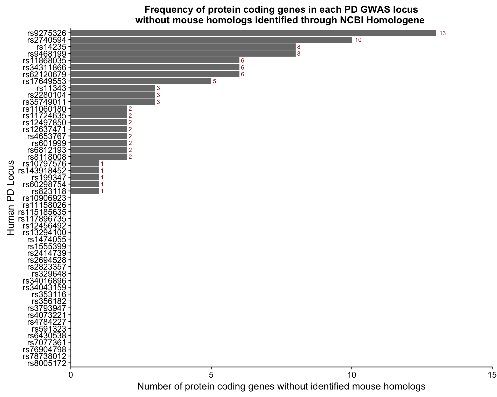

Figure S6
Paul Hook
Last update: 2018-01-11
Code version: 11f8ecb11b4abbebab3354eecd5fd9ddd066b8b9
Setting important directories
Also loading important libraries and custom functions for analysis.
seq_dir <- "/Volumes/PAULHOOK/sc-da-parkinsons/data"
file_dir <- "/Volumes/PAULHOOK/sc-da-parkinsons/output"
Rdata_dir <- "/Volumes/PAULHOOK/sc-da-parkinsons/data"
Script_dir <- "/Volumes/PAULHOOK/sc-da-parkinsons/code"
source(file.path(Script_dir,'init.R'))
source(file.path(Script_dir,"tools_R.r"))
#loading any special libraries
library(readr)
library(cowplot)
library(forcats)
library(reshape2)Loading in data need
The final PD GWAS gene scoring data frame was loaded in.
final.gwas.table <- read.delim(file = file.path(file_dir, "PD.GWAS.Score.Final.txt"))Figure S6A
Since ‘gene_biotype’ was included in the information extracted for each gene, we plotted the number of genes with each particular biotype in our data.
# Make bar plot for genes by gene_biotype
gwas.gene.biotype.df <- final.gwas.table %>%
filter(is.na(MouseSymbol)) %>%
group_by(gene_biotype)## Warning: package 'bindrcpp' was built under R version 3.3.2biotype.plot <- ggplot(gwas.gene.biotype.df, aes(x= fct_rev(fct_infreq(gene_biotype)))) +
geom_bar(fill = "gray48") +
theme(panel.grid.major = element_blank(), panel.grid.minor = element_blank(),panel.background = element_blank(), axis.line = element_line(colour = "black"), plot.title = element_text(hjust = 0.5)) +
xlab("Gene Biotype") + ylab("Number of genes without a defined mouse homolog") +
ggtitle("Biotype frequency of genes in PD GWAS loci\nwithout mouse homologs identified through MGI") +
coord_flip() + scale_y_continuous(limits = c(0,210), expand = c(0,0)) +
stat_count(aes(label=paste(..count..)), vjust=0.5, hjust = -0.5,geom="text", color = "brown4", size = 5)
biotype.plot
Figure S6B
We plotted the number of protein coding genes without a mouse homolog in each locus.
# Make bar plot for protein coding genes without homologs by locus
gwas.gene.locus.df <- final.gwas.table %>%
filter(is.na(MouseSymbol)) %>%
group_by(locus) %>%
filter(gene_biotype == "protein_coding")
locus.plot <- ggplot(gwas.gene.locus.df, aes(x= fct_rev(fct_infreq(snp)))) +
geom_bar(fill = "grey48") +
xlab("Human PD Locus") + ylab("Number of protein coding genes without identified mouse homologs") +
ggtitle("Frequency of protein coding genes in each PD GWAS locus\nwithout mouse homologs identified through NCBI Homologene ") +
scale_x_discrete(drop = F) + coord_flip() + scale_y_continuous(limits = c(0,15),expand = c(0,0)) +
stat_count(aes(label=paste(..count..)), vjust=0.5, hjust = -0.5,geom="text", color = "brown4", size = 3) +
theme(panel.grid.major = element_blank(), panel.grid.minor = element_blank(),panel.background = element_blank(), axis.line = element_line(colour = "black"), plot.title = element_text(hjust = 0.5))
locus.plot
Session Info
sessionInfo()## R version 3.3.0 (2016-05-03)
## Platform: x86_64-apple-darwin13.4.0 (64-bit)
## Running under: OS X 10.11.6 (El Capitan)
##
## locale:
## [1] en_US.UTF-8/en_US.UTF-8/en_US.UTF-8/C/en_US.UTF-8/en_US.UTF-8
##
## attached base packages:
## [1] grid splines stats4 parallel stats graphics grDevices
## [8] utils datasets methods base
##
## other attached packages:
## [1] bindrcpp_0.2 forcats_0.2.0 cowplot_0.9.2
## [4] readr_1.1.1 ggbiplot_0.55 scales_0.5.0
## [7] SC3_1.1.4 ROCR_1.0-7 jackstraw_1.1.1
## [10] lfa_1.2.2 tsne_0.1-3 gridExtra_2.3
## [13] slackr_1.4.2 vegan_2.4-4 permute_0.9-4
## [16] MASS_7.3-47 gplots_3.0.1 RColorBrewer_1.1-2
## [19] Hmisc_4.0-3 Formula_1.2-2 survival_2.41-3
## [22] lattice_0.20-35 Heatplus_2.18.0 Rtsne_0.13
## [25] pheatmap_1.0.8 tidyr_0.7.1 dplyr_0.7.4
## [28] plyr_1.8.4 heatmap.plus_1.3 stringr_1.2.0
## [31] marray_1.50.0 limma_3.28.21 reshape2_1.4.3
## [34] monocle_2.2.0 DDRTree_0.1.5 irlba_2.2.1
## [37] VGAM_1.0-2 ggplot2_2.2.1 Biobase_2.32.0
## [40] BiocGenerics_0.18.0 Matrix_1.2-11
##
## loaded via a namespace (and not attached):
## [1] RSelenium_1.7.1 colorspace_1.3-2 class_7.3-14
## [4] rprojroot_1.2 htmlTable_1.9 corpcor_1.6.9
## [7] base64enc_0.1-3 mvtnorm_1.0-6 codetools_0.2-15
## [10] doParallel_1.0.11 robustbase_0.92-7 knitr_1.17
## [13] jsonlite_1.5 cluster_2.0.6 semver_0.2.0
## [16] shiny_1.0.5 rrcov_1.4-3 httr_1.3.1
## [19] backports_1.1.1 assertthat_0.2.0 lazyeval_0.2.1
## [22] acepack_1.4.1 htmltools_0.3.6 tools_3.3.0
## [25] igraph_1.1.2 gtable_0.2.0 glue_1.1.1
## [28] binman_0.1.0 doRNG_1.6.6 Rcpp_0.12.14
## [31] slam_0.1-37 gdata_2.18.0 nlme_3.1-131
## [34] iterators_1.0.8 mime_0.5 rngtools_1.2.4
## [37] gtools_3.5.0 WriteXLS_4.0.0 XML_3.98-1.9
## [40] DEoptimR_1.0-8 hms_0.3 yaml_2.1.15
## [43] pkgmaker_0.22 rpart_4.1-11 fastICA_1.2-1
## [46] latticeExtra_0.6-28 stringi_1.1.5 pcaPP_1.9-72
## [49] foreach_1.4.3 e1071_1.6-8 checkmate_1.8.4
## [52] caTools_1.17.1 rlang_0.1.6 pkgconfig_2.0.1
## [55] matrixStats_0.52.2 bitops_1.0-6 qlcMatrix_0.9.5
## [58] evaluate_0.10.1 purrr_0.2.4 bindr_0.1
## [61] labeling_0.3 htmlwidgets_0.9 magrittr_1.5
## [64] R6_2.2.2 combinat_0.0-8 wdman_0.2.2
## [67] foreign_0.8-69 mgcv_1.8-22 nnet_7.3-12
## [70] tibble_1.3.4 KernSmooth_2.23-15 rmarkdown_1.8
## [73] data.table_1.10.4 HSMMSingleCell_0.106.2 digest_0.6.12
## [76] xtable_1.8-2 httpuv_1.3.5 openssl_0.9.7
## [79] munsell_0.4.3 registry_0.3This R Markdown site was created with workflowr